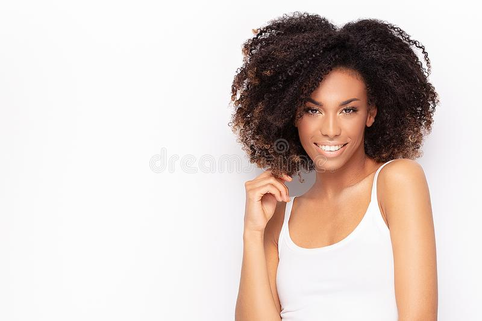

What We Do
We are a jewelry store that specializes in special
engagements, weddings and anniversaries. Mangata and Gallo
primarily operates online and has a small storefront in Austin,
Texas with an atelier attached for browsing.
Our selection of jewelry is known for its high-quality and classic look.
Our owner is an Austin local and is well known for her jewelry designs.

More About Us
Mariana is the owner and the lead designer of Mangata and Gallo.
After graduating from design school with a specialization in diamond
cutting and metal smithing, Mariana opened a store in her hometown,
Austin and started to grow her business online. Mariana has always managed
every aspect of the business, from jewelry design to marketing to e-commerce.
Behind the Scenes
Interested in what and how we go from the raw materials to the luxurious
jewelry that we provide to all of you valued customers? Look no more! We
have planned a variety of videos to show you how we do things. From sourcing
material to making the final touches to our jewelry, we will show you how we
do it. Stay tuned and check out our Info page to see when they come out!